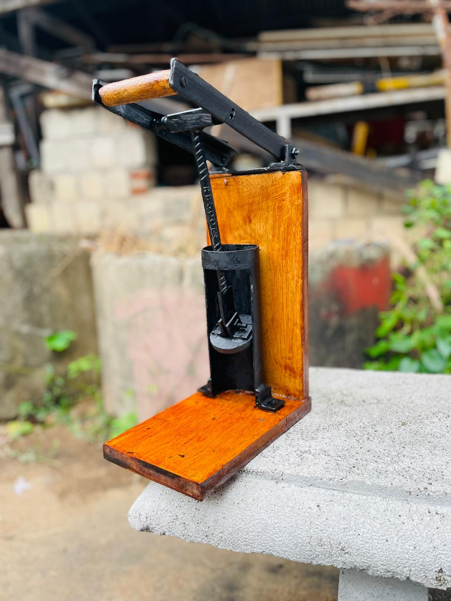
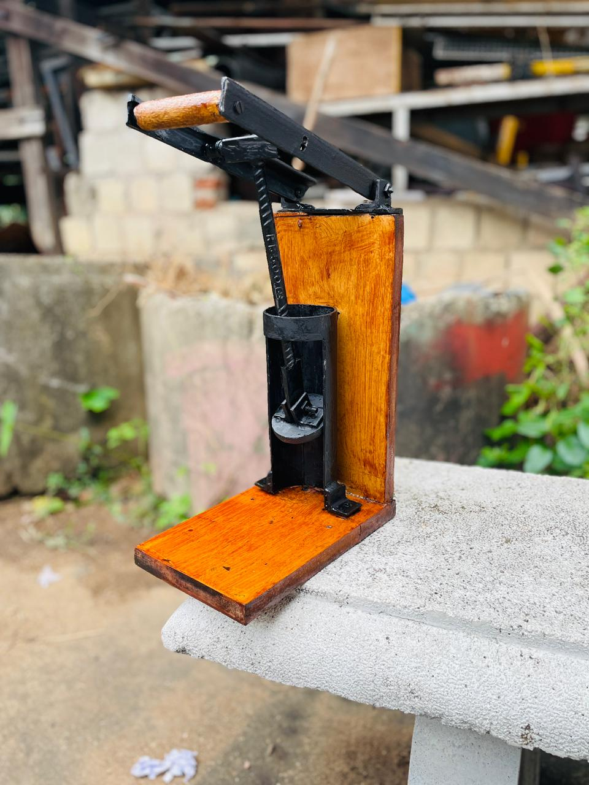

Prototype View 01
Physical prototype developed by the team during the manufacturing stage.
A group manufacturing project developed to apply practical manufacturing process skills gained throughout the semester and create a space-saving solution for the disposal of empty tins.

The Manual Can Crusher was developed as a group project to demonstrate and apply the manufacturing process skills developed throughout the semester's laboratory sessions. The project provided an opportunity to transform practical manufacturing knowledge into a functional mechanical prototype.
The crusher was designed with a practical purpose: to reduce the volume occupied by discarded tins, making them more space-efficient for disposal and storage.
The prototype was manufactured by applying the manufacturing processes and techniques developed through the laboratory sessions during the semester. The project required the team to combine practical fabrication, assembly and problem-solving skills to produce a working prototype.
A physical prototype was developed to evaluate the proposed mechanism under practical operating conditions. Building and testing the prototype allowed the team to identify issues that could not be fully evaluated during the initial development stage.
Physical prototype developed by the team during the manufacturing stage.

Additional view of the completed manual can crusher prototype.
Initial testing revealed an issue with the first prototype attempt. The team evaluated the observed behaviour, identified the need for improvement and modified the prototype before carrying out another test.
The final prototype demonstrated the intended can-crushing operation and provided a practical demonstration of the manufacturing and fabrication skills developed throughout the project.
More importantly, the project demonstrated the value of physical testing and iteration in developing a functional mechanical product.